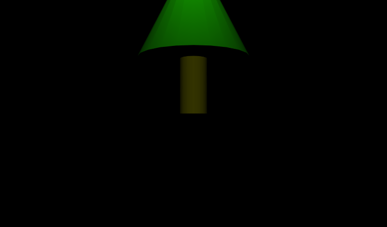

|
Scale grows or shrinks a coordinate system by a scaling factor in X, Y, and Z.
Transform operations are bottom-up: children shapes are first scaled, rotated, then translated.
Order is fixed, independent of the field order that happens to occur in the Transform node.
These X3D scenes are adapted directly from the
original VRML 2.0 Sourcebook chapter examples.
Also available:
Introduction to VRML97 SIGGRAPH98 course notes.
|

|


![[1] Figure07.04bScale2xWithAxes.x3d - View shape](_viewpoints/Figure07.04bScale2xWithAxes.x3d._VP_View_shape.png){kind=link}
![[2] Figure07.04bScale2xWithAxes.x3d - (default X3D view from 0 0 10)](_viewpoints/Figure07.04bScale2xWithAxes.x3d._VP_Default_viewpoint.png){kind=link}
![[3] Figure07.05bScale0.5xWithAxes.x3d - View shape](_viewpoints/Figure07.05bScale0.5xWithAxes.x3d._VP_View_shape.png){kind=link}
![[4] Figure07.05bScale0.5xWithAxes.x3d - (default X3D view from 0 0 10)](_viewpoints/Figure07.05bScale0.5xWithAxes.x3d._VP_Default_viewpoint.png){kind=link}
![[5] Figure07.06bScale2yWithAxes.x3d - View shape](_viewpoints/Figure07.06bScale2yWithAxes.x3d._VP_View_shape.png){kind=link}
![[6] Figure07.06bScale2yWithAxes.x3d - (default X3D view from 0 0 10)](_viewpoints/Figure07.06bScale2yWithAxes.x3d._VP_Default_viewpoint.png){kind=link}
![[7] Figure07.07bScale0.5zWithAxes.x3d - View shape](_viewpoints/Figure07.07bScale0.5zWithAxes.x3d._VP_View_shape.png){kind=link}
![[8] Figure07.07bScale0.5zWithAxes.x3d - (default X3D view from 0 0 10)](_viewpoints/Figure07.07bScale0.5zWithAxes.x3d._VP_Default_viewpoint.png){kind=link}
![[9] Figure07.08bScale2x_0.5y_4zWithAxes.x3d - View shape. Axes scale is 5 5 5.](_viewpoints/Figure07.08bScale2x_0.5y_4zWithAxes.x3d._VP_View_shape._Axes_scale_is_5_5_5..png){kind=link}
![[10] Figure07.08bScale2x_0.5y_4zWithAxes.x3d - (default X3D view)](_viewpoints/Figure07.08bScale2x_0.5y_4zWithAxes.x3d._VP_Default_viewpoint.png){kind=link}
![[12] Figure07.09SimpleSpaceshipBodyWingsWithAxes.x3d - (default X3D view)](_viewpoints/Figure07.09SimpleSpaceshipBodyWingsWithAxes.x3d._VP_Default_viewpoint.png){kind=link}
![[13] Figure07.10SimpleSpaceship.x3d - Spaceship](_viewpoints/Figure07.10SimpleSpaceship.x3d._VP_Spaceship.png){kind=link}
![[14] Figure07.10SimpleSpaceship.x3d - (default X3D view from 0 0 10)](_viewpoints/Figure07.10SimpleSpaceship.x3d._VP_Default_viewpoint.png){kind=link}
![[16] Figure07.11ScaledArches.x3d - (default X3D view from 0 0 10)](_viewpoints/Figure07.11ScaledArches.x3d._VP_Default_viewpoint.png){kind=link}
![[17] Figure07.12aSimpleTree.x3d - View tree](_viewpoints/Figure07.12aSimpleTree.x3d._VP_View_tree.png){kind=link}
![[18] Figure07.12aSimpleTree.x3d - (default X3D view from 0 0 10)](_viewpoints/Figure07.12aSimpleTree.x3d._VP_Default_viewpoint.png){kind=link}
![[19] Figure07.12bVerticallyScaledTree.x3d - View tree](_viewpoints/Figure07.12bVerticallyScaledTree.x3d._VP_View_tree.png){kind=link}
![[20] Figure07.12bVerticallyScaledTree.x3d - (default X3D view from 0 0 10)](_viewpoints/Figure07.12bVerticallyScaledTree.x3d._VP_Default_viewpoint.png){kind=link}
![[21] Figure07.13DiagonallyScaledTree.x3d - View tree](_viewpoints/Figure07.13DiagonallyScaledTree.x3d._VP_View_tree.png){kind=link}
![[22] Figure07.13DiagonallyScaledTree.x3d - (default X3D view from 0 0 10)](_viewpoints/Figure07.13DiagonallyScaledTree.x3d._VP_Default_viewpoint.png){kind=link}